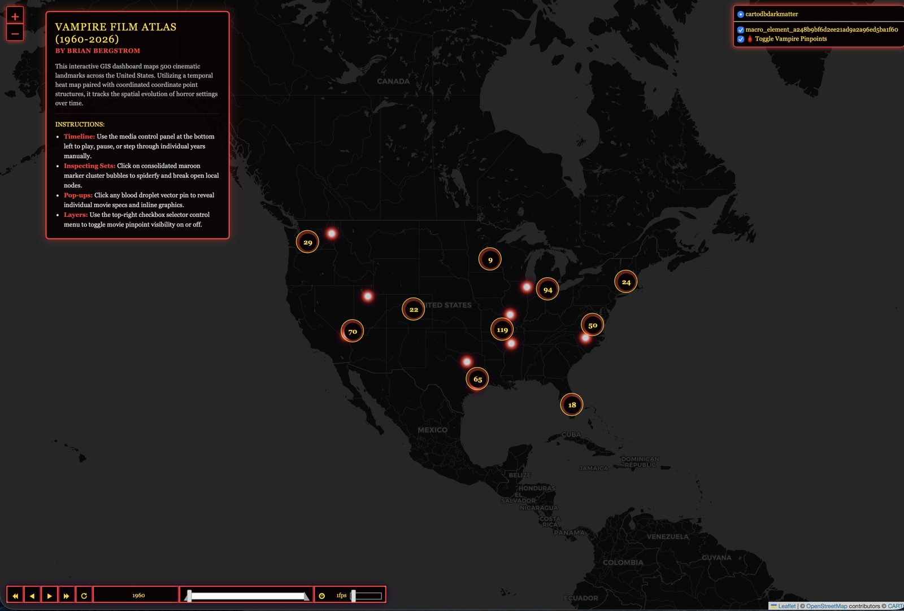

Personal — gift
Vampire Film Atlas
A temporal heat map of roughly 500 vampire and horror film filming and setting locations across the U.S., spanning 1960 to 2026.
Built as a gift for a friend who runs the horror-film Discord community I'm part of.
Read the story